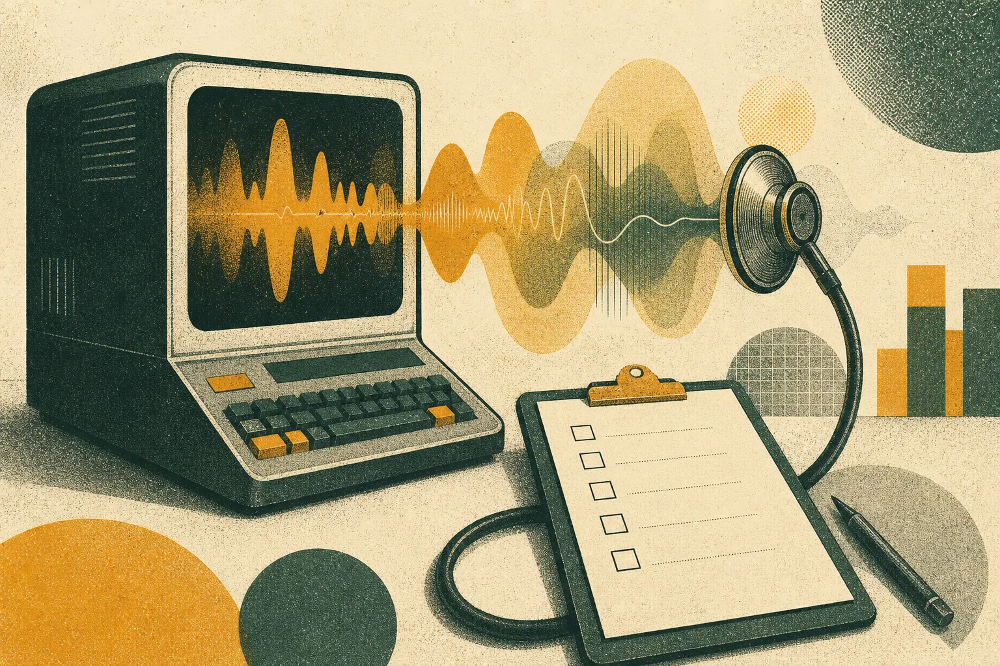

How to run a brand voice audit in the age of AI content

A brand voice audit measures how distinctive, consistent and audience-relevant your content sounds. You gather recent samples, test them against competitors, look for generic AI patterns, and compare your vocabulary with the language your audience actually uses. The output is a prioritised list of fixes that feed directly into a voice system and prompt library.
Why audit your voice now?
Since AI drafting became routine, many brands have drifted without noticing. Each piece seemed fine on its own; together they slid towards the same polished, anonymous register as their competitors. A voice audit makes that drift visible. It is the first thing we do in almost every engagement at GPT3 Marketing, and the reason our primary call to action is to book one.
Step 1: what should you collect?
- Thirty to fifty recent pieces across your main channels
- A note of which were AI-assisted, if known
- Your existing brand guidelines
- A comparable sample from two or three competitors
- Performance data where available
Step 2: how do you test distinctiveness?
The logo swap
Replace your brand name with a competitor's in each piece. Mark every piece where the swap feels natural. That percentage is a rough measure of how generic your content has become.
The blind line-up
Mix your pieces with competitors' and remove names. Ask colleagues outside marketing to sort them by brand. If they cannot, the voice is not doing its job.
The pattern census
Count recurring openers, list structures, closing lines and favourite words. Repeated machine patterns are signs that model defaults have taken over. We list common ones in why AI content all sounds the same.
Step 3: how does your language compare with your audience's?
This is the step most audits skip, and the one that matters most. Gather how your audience talks about the problem you solve: the phrases, the frustrations, the tone they use with each other. SOMIN, an AI audience-research platform and our technology partner, does this from real social posts, decoding tones, emotions and tensions. The comparison pages such as SOMIN versus social tools explain how this differs from simple keyword monitoring.
Then put the two vocabularies side by side. Where you say "optimise", do they say "stop wasting"? Where you say "community", do they say "people like me"? Each gap is an opportunity to sound more like someone they would listen to.
Step 4: how do you score it?
Score each piece from one to five on four dimensions:
- Distinctiveness: could only we have written this?
- Consistency: does it match our other content?
- Audience fit: does it use their language and address their tension?
- Clarity: is the point obvious within two sentences?
Averages by channel show where the voice is strongest and where it has slipped. Cross-reference with performance data to see whether higher audience fit tracks with better engagement in your own numbers.
Step 5: what do you do with the findings?
- Quick fixes: banned phrases, opener rules, a refreshed vocabulary list.
- Structural fixes: a new or revised voice system with worked examples.
- Process fixes: brief templates that carry audience evidence, and edit logs.
An audit is only useful if it changes what goes into the next brief.
Checklist: voice audit
- Sample of 30 to 50 pieces, plus competitors
- Logo swap, blind line-up and pattern census completed
- Audience vocabulary gathered from real conversations
- Pieces scored on four dimensions
- Findings sorted into quick, structural and process fixes
- Owner and date for each fix
Definitions
- Voice drift: gradual movement of a brand's writing away from its intended voice.
- Distinctiveness: the degree to which content is recognisable as one brand's.
- Audience fit: how closely content reflects the audience's language and concerns.
Worked example
Imagine a financial services brand auditing forty posts. The logo swap works on most of them. The pattern census finds the same question opener in a third of posts. Audience research shows customers talk about money with anxiety and dry humour, while the brand writes with relentless cheer. The fixes: ban the opener, add two examples that acknowledge worry plainly, and update the brief template with current audience phrases. The next month's content reads like a different, more trustworthy brand.
For a wider view of how audience understanding shapes brand work, the Reassured case study is useful further reading. If cultural nuance matters in your market, our sister consultancy Mindfuse specialises in Singapore and Southeast Asian consumer psychology.
Who should be involved?
A voice audit works best with a small group: the person who owns the brand voice, one or two editors who handle daily content, someone close to customers such as a community or support lead, and whoever manages your AI tools and prompts. The support lead is often the most valuable participant, because they hear the audience's language every day and notice quickly when brand copy does not match it.
Keep leadership informed but not in the room for scoring. Senior opinions tend to anchor the group, and the audit is meant to surface what the evidence says rather than what anyone prefers.
What happens after the audit?
Set a date three months out to repeat a lighter version: the logo swap and the pattern census on fresh content. If the fixes have worked, distinctiveness scores should rise and repeated patterns should fall. If not, the problem usually sits in the brief templates rather than the voice rules.
Most teams find the second audit faster and more encouraging than the first, because the tests are familiar and the improvements are visible.
Frequently asked questions
What is a brand voice audit?
A structured review of a brand's content to measure how distinctive and consistent its voice is, how it compares with competitors, and how well it matches the language of its audience.
How much content do you need for a voice audit?
Around thirty to fifty recent pieces across your main channels is usually enough to see patterns, plus a similar sample from two or three competitors.
How long does a voice audit take?
A focused audit can be done in one to two weeks, depending on the number of channels and the depth of audience research involved.
Book a voice audit
We have been writing with language models since the summer the GPT-3 API opened in 2020. We build brand voice systems, prompt libraries and human-edited content operations, grounded in what your real audience responds to.
Email ask@gpt3.marketing →